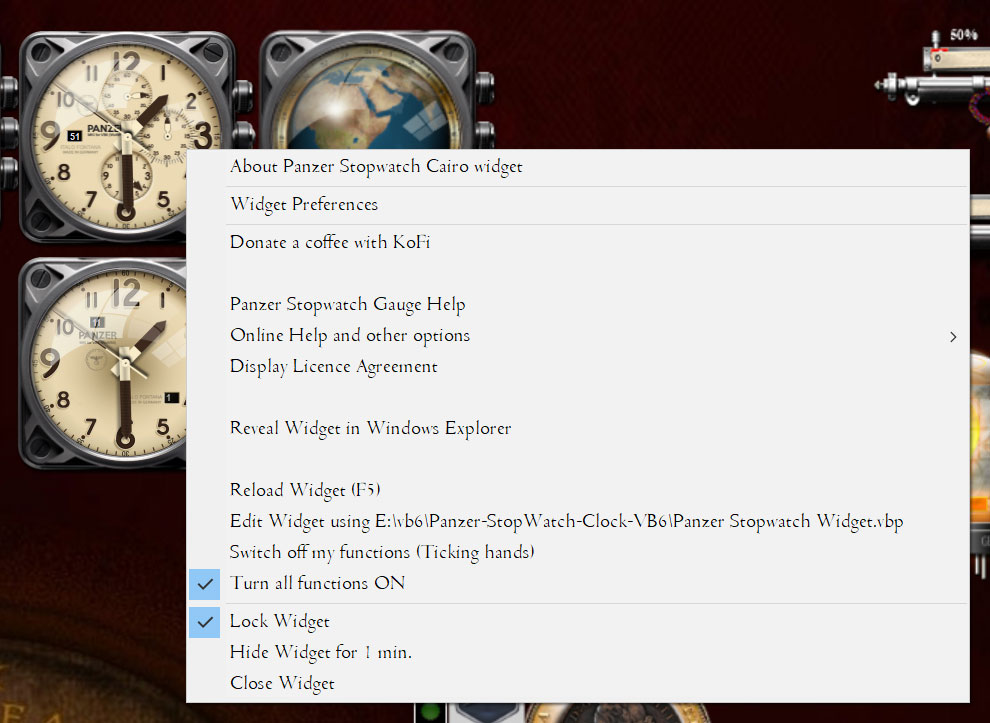
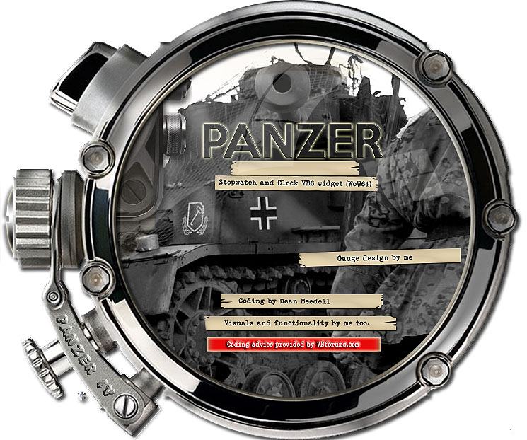

Installation
 When
you run the SETUP.EXE a splash screen will appear for 1 brief
second,
then it will suggest default locations where you can install this
utility. When the installation is complete it will run the program.
That is it.
When
you run the SETUP.EXE a splash screen will appear for 1 brief
second,
then it will suggest default locations where you can install this
utility. When the installation is complete it will run the program.
That is it.To uninstall the program, there is an uninstall.exe that will remove the application for you in the program folder. If you ever want to to reinstall a new version of the program, always uninstall the old version beforehand.
Anti Virus Tools
When you install the Panzer Stop Watch Widget for the first time you
will
need to accept that your anti-virus tool will pause the installation to
test the installation program for malware. Due to this program being
written in VB6 and being a new program your a/v tool has not
encountered, it WILL flag it as being potentially malware. This is a
FALSE POSITIVE. This only occurs with such tools as Avast or similar,
see below.If you do not feel at ease with running this tool with an exception for malware scans, then I suggest you uninstall it and instead only run software you trust. To help you gain that trust, the source code for this utility is on github. You can view and edit that code at your leisure and you can even compile the code for yourself. This should give you the confidence that you need. There is a link on the tool's right click menu that will take you straight through to the github page here: https://github.com/yereverluvinunclebert/Panzer-StopWatch-Clock-VB6
The a/v tool I have installed on my PC is Avast - the following is what occurs on installation on my system: When Avast first encounters the SETUP.EXE file it will test this for malware, it takes approx. 20-30 seconds to complete a scan. Let it finish. Once done, the setup will then run the installation and finally it will run Panzer Stop Watch Cairo Widget itself. At this point Avast will do another scan to test the Panzer Stop Watch Widget program binary (the .exe file) which will take another 30 seconds or so. When that second scan is complete you will find the Panzer Stopwatch on your desktop running nomally.
Until the Avast databases are updated and it fully trusts the program, Avast may try to scan it every time it is run. This is a pain but it will eventually go away. In the meantime, if you want to prevent your a/v tool from scanning (and being continually intrusive on a trusted program such as this) then you will need to set an exception or an exclusion within Avast (or whichever anti-virus tool you use). Eventually, the creators of the various a/v tools will become familiar with this particular utility and the binary will no longer raise any false positives nor alarms.
This is a new VB6 utility so it is an inevitable occurrence - being a new and unknown binary, it is of course frustrating but it will eventually go away.
Basic Functionality
When
you
install and run the
widget for the first time it will present you with the licence screen
and launch the prefs. You must accept the licence terms to proceed
further. The Preference screen allows you to configure the
functionality of the clock component of the Panzer Stop Watch
'widget'. The clock will also appear on your main monitor,
animating slowly using minimal resources. This widget's functionality
is limited as it is just a template for widgets yet to come, however,
it can be increased in size, animation speed can be changed,
opacity/transparency may be set as to the user's discretion. The widget
can also be made to hide for a pre-determined period. If the
application is already running then you can double-click to run a new
instance of the binary and you will have two or more clocks running on
the desktop. As each Panzer Stop Watch running program is a mere
desktop 'Widget',
each
instance will not appear on the taskbar unless you configure it to do
so. Widgets tend to operate underneath all
your other programs and sit quietly on the desktop doing their thing.
Fig 01a. Showing The Panzer Stop Watch Widget in large mode.
A
right-click on any of the graphical elements above will elicit a
response as shown below.
Fig 01b. The Help Window.
Widget Help Button
When you select this option the brief one-screen help pop-up will appear.as above.
Locking Pin
The widget can be made to lock into place so that it cannot be moved. This will also store the widget's current X,Y location on the screen, storing these values in the preferences under the Position Tab. If the widget is restarted it will relocate to this position automatically.
Preferences Button
The Widget Preferences screen will be described in more detail in the Preferences section of this help document. See below.
Stop Button
When in stopwatch mode the stop button ends the stopwatch function. When pressed, the hand will rotate forward to the zero position.
In clock mode this button stops the clock hands from rotating.
Start Button - Clock Mode
In clock mode the start button only restarts the clock hands when they have been paused.
Start Button - Stopwatch Mode
When in stopwatch mode the start button starts/pauses and restarts the stopwatch function. When you first press the button the main clock hands will rotate away and park themselves to a location on the clock face where they will not obscure any stopwatch functions.
In stopwatch mode, a second press of the button and the stopwatch hands will pause but the stopwatch will keep running in the background.
In stopwatch mode, when the hands are paused the digital second display will keep running and displaying the current seconds.
In stopwatch mode, when you press the button again to restart, the hand will rotate forward to the current actual position and the timing run will continue.
Tick Control Button
The tick control button toggles the second hand movement from a one second tick to a more smooth flow.
Menus & Other Options

Fig 02. Panzer Stop Watch Widget showing right click menu options.
You will note the use of the Centurion Light SF at 8pt on all the menu images shown in this document. This is the recommended font for use with this utility giving it a suitably old-fashioned feel. You will find the Centurion Light SF font below the stop watch program's resources folder in the "other" directory. You install this font by double-clicking on the TTF file supplied. If this font is not installed and selected, the default font is Times New Roman.
A
right-click on any icon in the icon pane will give you more
options, the main menu is disclosed when right-clicking
anywhere on the dock.

Fig 03. Panzer Stop Watch Widget right click menu options .
About Panzer Stop Watch Cairo Widget
When
you select this option, the
About Window provides a brief hint as to what this program is 'about'
and
who made it. There are more relevant details at the end of this
document.
Fig 04. The About Window.
The about window gives me credit for doing everything but in reality the program comprises a lot of FOSS VB6 code from other developers. I have given credit to the original authors of any code I have used and there is a section here in this document that gives credit where credit is due.
Widget Preferences.
The Widget Preferences screen will be described in more detail in the Preferences section of this help document. See below.
Donate a coffee with Kofi.
If you have any spare change that you care to donate to buy me a 'Kofi' then it would be really appreciated.
Panzer Stop Watch Gauge Help.
When you select this option a brief one-screen help pop-up will appear.
Fig 05. The Help Window.
Other

Fig 04. Other menu options
The "other" option gives access to extra menu options, the help (this page) and other useful functions. When you first select one of these a confirmation pop up will appear. This pop-up will appear every timer unless you click upon the "hide this message" option.
The Licence Screen
When you select this option, a licence window will appear allowing you to accept or decline the licence.

Fig 05. The Licence Window.
The licensing is rather important. Using this program implies
you have accepted the licence. The GPL licence applies to the code
alone.
With regard to the resources and icons bundled with the program note
this: Do not forget that when you are using my icons and resources for
commercial projects you need to obtain my written consent and a
commercial use licence that allows you to do so. Otherwise, usage of
the associated resources is
forbidden.LICENCE AGREEMENTS:
The software is provided 'as-is', without any express or implied
warranty. In no event will the author be held liable for any damages
arising from the use of this software. Permission is granted to anyone
to use this software for any purpose, including commercial
applications, and
to alter it and redistribute it freely, subject to the following
restrictions:2. Altered source versions must be plainly marked as such, and must not be misrepresented as being the original software.
3. This notice may not be removed or altered from any source distribution.
Copyright ©2023 Dean Beedell
This
program is free software; you can redistribute it
and/or modify it
under the terms of the GNU General Public Licence as published by the
Free Software Foundation; either version 2 of the Licence, or (at your
option) any later version. This program is distributed in the hope that
it will be useful, but
WITHOUT ANY WARRANTY; without even the implied warranty of
MERCHANTABILITY or FITNESS FOR A PARTICULAR PURPOSE. See the
GNU
General Public Licence for more details. You should have received a
copy of the GNU General Public Licence along
with this program; if not, write to the Free Software Foundation, Inc.,
51 Franklin St, Fifth Floor, Boston, MA 02110-1301
USA You may use any of my own imagery in your own creations but
commercially only with my permission. In all other non-commercial cases
I still require a credit to the original artist using my name or at
least one of my
pseudonyms - and a link to my site. With regard to the commercial use
of
incorporated images, permission and a licence would need to be obtained
from the original owner and creator - ie. from me.Reveal Widget in Windows Explorer.
When you select this option, a file explorer window will open using the folder location where your application is situated. A most useful function to find the application quickly.
Reload Widget (F5).
This option quietly stops and restarts the Panzer Stop Watch Widget. On the rare occasion that the Panzer Stop Watch Widget has a tiny problem, possibly due to an unforeseen bug - in that case you can simply reset it by reloading the widget. In addition, if the widget has focus then a key-press on the F5 key will also restart the widget. Be aware this is a soft-reload, just initialising and re-running the main software components.
If you want to perform a hard restart, ie. program closing and restarting then you can press SHIFT+R. The program will shutdown and use the restart binary to restart itself.
Edit Widget
This menu option only appears if the DEBUG selection option is ON in the Development Preferences. In the prefs, enter the path here to Stop Watch widget's .vbp file (a VB6 project file). If the widget's source code has been downloaded from github, unpacked and placed somewhere locally - in addition, if you have installed the VB6 IDE, this menu option will add an option to conveniently launch the VB6 IDE, opening up the project, so you can edit the program, re-code and compile dynamically. A link to the current github location will be found on the update button on the about page of the preferences.
Switch off my functions & Turn all my functions ON
These options are a toggle to stop and start the rotation of the hour, minute, second hands and date functions.
Lock Widget
The widget can be made to lock into place so that it cannot be moved. This will also store the widget's current X,Y location on the screen, storing these values in the preferences under the Position Tab. If the widget is restarted it will relocate to this position automatically.